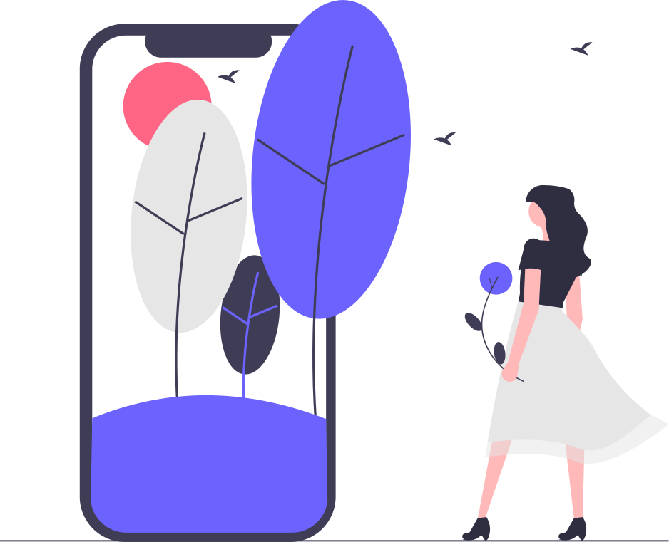
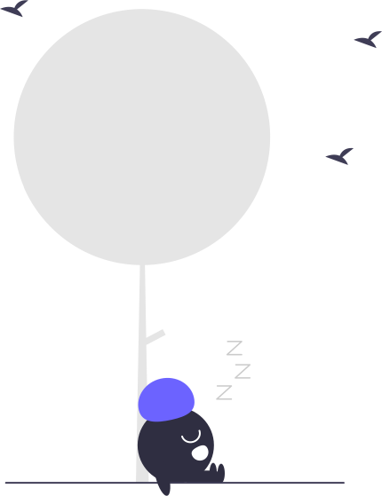

The eco-design booklet for front-end web developers
A memo to reduce the ecological footprint of your website
Use HTTP Compression
Enable gzip or brotli compression on your production server.
How to know if compression is enabled ?
Check the Content-Encoding header in network responses in your browser devtools
Use Cache
Many layers of cache are available:
HTTP cache, Cache API with Service Workers, middlewares,
caching on database queries, smarter logic for fetching data client-side...
Take any opportunity to avoid useless network requests !
Make a Progressive Web App
Consider making your webapp a PWA with offline support.
This reduces the network requests to their bare minimum, for the best performance and lowest energy consumption.
Dependency diet
Reduce your amount of dependencies and select packages with few to no dependencies.

Ship less
Use modular imports and tree-shaking to only ship what you need.
Minify HTML, CSS and JavaScript within your build process.
Bundle your codebase to reduce the amount of HTTP requests needed.
Compress assets
Optimize media assets using the best compression available: AVIF/WebP for pictures, H.264/WebM for videos, AAC/OGG for audio.
Avoid bitmap graphics when possible
Use SVG vectorial images or canvas drawing instead of bitmap formats whenever possible.
SVG are much smaller, more accessible, infinitely scalable without loss of quality, and can be animated !
Lazy load
Use loading="lazy" on <img> and <iframe> tags to only
load them when the user can actually see them.
Preload content only when you detect a user behavior that seems to indicate they really want to see this content next.
Fine-tune your build
Use browserslist and fine-tuned transpilation to cover as many browsers as possible while adding the fewest amount of polyfills required.

Memoize
Add memoization to the expensive and frequently called JavaScript functions when possible.
RAM is cheaper than CPU in most scenarios. Make your functions pure, atomic, generic and composable to add memoization more easily.